Having grown up with Mathematica as my first programming language, it is only
natural that I should want to tinker with the system now. Unfortunately, it is
a proprietary system kept under the lock and key of WRI. The obvious solution
to this problem is to program it again from the ground up. While I would have
used assembly language in the past for this endeavour, we can get things done
a lot faster with C++, though not without some serious systemic performance
problems in some corner cases.
Naming things is hard. It is clearly some kind of Computer Algebra System.
And, The Linux Edition was the first to be written, so it got called
casl and then castle.
features of castle
some internal design decisions
exceptional control flow
C++ rant
asmcastle
pattern matching
screenshots
Features
Dependencies and external sources of code:
-
FLINT and Arb, and therefore
-
GMP and MPFR
-
Kim Walisch's prime count
-
Some symbol tables are stored with a HAT-trie
-
All font data was parsed from noto.
-
Apparently the relevant patents
on subpixel rendering have expired, so now we are allowed to render images at
thrice the x-resolution and apply a simple filter to render on RGB display devices.
This last point is noticable on low resolution displays: If the pixels of these
images line up with the pixels of your display device and you have an RGB format,
then one of these images should appear crisper than the other. If not, then
the one that is supposed to be crisper will just look like the TikTok logo.
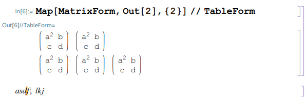
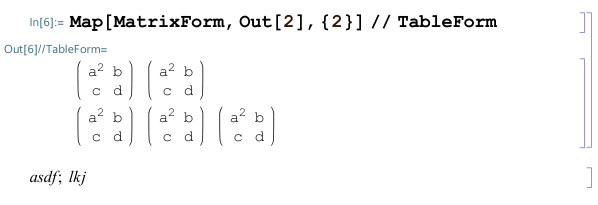
And a pure text comparison:
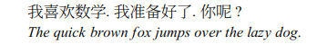
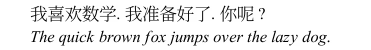
Other features completely implemented from scratch:
-
A custom font renderer capable of rendering a full screen (with uncached glyphs)
of text at about 20 frames per second. I chose a custom renderer because it is
simpler than figuring out the right OS-specific interface for measuring the size
of glyphs and drawing rotated characters, and then being disappointed with the
quality of the results. It is also not trivial to figure out how to get an OS to
draw square root symbols or curly brackets enclosing objects of arbitrary size
by stretching certain part of the glyphs.
As some point is just easier to shade the darn pixels yourself.
-
A compiler for Mathematica patterns, which resemble regular expressions.
-
The main evaluation loop and all of the supporting functions which constitute
the interpreter for running Mathematica.
-
A serialization format, which is used to pass expressions between the kernel and the GUI.
-
The appropriate wrappers of FLINT and Arb, so that polynomial factorization
(Factor[x^2-y^2]) or calculation of pi (N[Pi,100]) is
available at your finger tips as one-liners.
Internal use: pass a copy? or not?
Castle uses two raw pointer types ex and er for expressions.
These are of course wrapped in higher level classes with automatic memory
management and destructors, but the raw pointer types are used to pass and
receive expressions through the function call boundary. Why deal with these raw
pointers? Well, the C++ ABI for passing around, for example,
classes such as unique_ptr is well-known to be terrible.
Dealing with raw pointers immediately brings up the question: does the caller
own it (er)? or is the callee expected to take ownership (ex)?
Leaving only one pointer type for both is common in programming, but forces
a huge burden on the programmer as this kind of code is not self-documenting.
These two separate pointer types come with a huge caveat: the pointer aliasing
rules of C. It is possible for a er and an ex to point to the
same memory location, but the compiler is allowed to assume this is not the case.
This can and does cause real bugs. Therefore castle comes with a configuration
switch which either makes er and ex distinct types or the same type.
In case of the former we can get checking at compile time of the eternal question
"Was I supposed to pass a copy?", but the resulting binary is either invalid or
cannot be produced with optimizations enabled. In the latter case, we
can enable optimizations. Hence, the er / ex dichotomy is a
debugging tool.
A typical function that uses expressions and passes them along looks like
void eparser::handle_ex(ex E)
{
uex e(E);
handle_char(CHAR_NONE);
if (error) {return;}
handle_token_ex(e.release());
e.kill_dead();
}
The uex class is essentially a unique_ptr and is supposed to
own a raw pointer that can either be null or a real expression.
struct uex {
ex data;
uex(): data(nullptr) {}
uex(ex d): data(d) {}
uex (const uex & other): data(ecopy(other.data)) {}
~uex() {if (data != nullptr) eclear(data);}
ex release() {
ex datacopy = data;
data = nullptr;
return datacopy;
}
...
}
Then, what is going on with kill_dead? Well, besides not having
destructive moves in C++, the C++ compiler is not able to figure out that
e.data == null at the end of this function, and hence emits the full
code for ~uex()! That is, without the e.kill_dead(); and with
g++ -O3, we get the code
00000000000fcd40 <_ZN7eparser9handle_exEP9ex_struct>:
fcd40: endbr64
fcd44: push rbp
fcd45: mov rbp,rdi
fcd48: sub rsp,0x10
fcd4c: mov QWORD PTR [rsp+0x8],rsi ; constructor for uex
fcd51: mov esi,0xffffffff
fcd56: call 10b970 <_ZN7eparser11handle_charEi>
fcd5b: mov eax,DWORD PTR [rbp+0x1c8]
fcd61: mov rsi,QWORD PTR [rsp+0x8]
fcd66: test eax,eax
fcd68: jne fcda0 <_ZN7eparser9handle_exEP9ex_struct+0x60>
fcd6a: mov rdi,rbp
fcd6d: mov QWORD PTR [rsp+0x8],0x0 ; put 0x0 in there for the release
fcd76: call fbcb0 <_ZN7eparser15handle_token_exEP9ex_struct>
fcd7b: mov rdi,QWORD PTR [rsp+0x8] ; you dummy!
fcd80: test rdi,rdi ; you just put 0x0 in there!
fcd83: je fcd96 <_ZN7eparser9handle_exEP9ex_struct+0x56>
fcd85: mov rax,QWORD PTR [rdi]
fcd88: sub rax,0x10
fcd8c: mov QWORD PTR [rdi],rax
fcd8f: jae fcd96 <_ZN7eparser9handle_exEP9ex_struct+0x56>
fcd91: call 125480 <_Z12ex_cleardoneP9ex_struct>
fcd96: add rsp,0x10
fcd9a: pop rbp
fcd9b: ret
...
Therefore, the code for kill_dead is
struct uex {
...
void kill_dead() {
assert(data == nullptr);
data = nullptr;
}
...
}
and can be used at any time to stop gcc from emitting pointless destructor code.
Non-local control flow
Another issue that immediately arises when implementing an interpreted language
is how commands such as goto, continue, and break are
going to work. The basic idea is illustrated in this loop.
n = 0; Label["start"]; n = n + 1; If[n < 1000000, Goto["start"]]; Print["done"]
This code start out by setting n to zero, increments it until it gets
to a million, then prints "done". This is all done using wonderful
Gotos in place of other looping constructs.
The tree representation of this code with which the interpreter works looks like
CompoundExpresssion[
Set[n, 0]
,
Label["start"]
,
Set[
n
,
Plus[n, 1]
]
,
If[
Less[n, 1000000]
,
Goto["start"]
]
,
Print["done"]
]
Each node in the tree has builtin code for evaluating it, and the evaluation is applied
recursively using the known evaluation rules for Mathematica. For example, when
the Goto["start"] is evaluated, this evaluation is called from within the
evaluation of the enclosing If, which is itself called from within the
CompoundExpression.
Now, the interesting thing is how the Goto["start"] gets back to
Label["start"], that is, how the interpreter transfers control to an
arbitrary other location. To give an indication of how integrated this control
transfer must be with the rest of the system, here is one test from castle's
test code (which, of course, is run with On[Assert]).
t = Reap[
i = Pi;
Block[{i = 1},
Label["loop"];
Sow[i];
MatchQ[i, _ ? (If[# > 5, Sow[i*i]; Goto["out"]]&)];
i = i + 1;
Goto["loop"];
];
Assert[False];
Label["out"];
i
];
Assert[t === {Pi, {{1, 2, 3, 4, 5, 6, 36}}}];
The Goto["out"] can be called from within the pattern matcher and also
can transfer control to a point outside the Block. This is all perfectly legal
Mathematica code and expected behaviour. Hence, the Goto["out"] must
exit the pattern matcher gracefully and exit the Block gracefully,
which involves restoring the value of i from 6 to Pi.
It turns out that we cannot go to truly arbitrary locations in the code. A slight
modification of the example above
n = 0; If[True, Label["start"]]; n = n + 1; If[n < 1000000, Goto["start"]]; Print["done"]
will result in a failure to find the right label. It turns out that we can only
go to labels that are inside compound expressions that enclose, at some level, the
corresponding Goto. The label is now inside an If, which
renders it invisible to the outer CompoundExpression. Well, this behaviour
of Goto screams for an implementation using exceptions.
The implementation of Goto simply throws an object which we hope
to catch later:
ex dcode_sGoto(er e)
{
if (elength(e) != 1)
return _handle_message_argx1(e);
throw exception_sym_sGoto(ecopy(e));
return nullptr;
}
Now, there are two catchers for exception_sym_sGoto. One is inside the
code for CompoudExpression:
ex dcode_sCompoundExpression(er e)
{
size_t n = elength(e);
size_t i = 0;
if (unlikely(n == 0))
return gs.sym_sNull.copy();
while (true)
{
i++;
try {
ex r = eval(ecopychild(e,i));
if (i < n)
eclear(r);
else
return r;
}
catch (const exception_sym_sGoto & X)
{
uex f(reinterpret_cast(X.data));
for (i = 1; i <= n; i++)
{
er ei = echild(e,i);
if (ehas_head_sym_length(ei, gs.sym_sLabel.get(), 1) &&
ex_same(echild(ei,1), f.child(1)))
{
// have found the correct label, proceed with try block above
break;
}
}
if (i > n)
{
// no label found, search higher up the call stack
throw exception_sym_sGoto(f.release());
return nullptr;
}
}
}
}
The other one is at the top level so that an unfound label will gracefully
print a message instead of terminating the program as C++ is supposed to do:
ex topeval(ex E)
{
try
{
return eval(E);
}
catch (const exception_sym_sGoto & X)
{
uex f(reinterpret_cast(X.data));
_gen_message(gs.sym_sGoto.get(), "nolabel", "Label `1` not found.", f.copychild(1));
return emake_node(gs.sym_sHold.copy(), f.release());
}
...
}
C++ exceptions are slow?
We have seen above the following limitations of C++ – that is, the language
along with a state-of-the-art compiler in the year 2022:
-
no move destruction
-
provably trivial destructor code is not optimized as such
-
classes such as uex are always placed on the stack, even though they
could live in a register as they are just 64 bits.
There is one item that needs to be placed on this list:
-
C++ exceptions are very slow, typically tens of thousands
of machine instructions just to pop one simple stack frame.
The slow down can be seen in action:
In[1] := Timing[n = 0; Label["start"]; n = n + 1; If[n < 1000000, Goto["start"]]; Print["done"]]
"done"
Out[1] = {3.159714, Null}
In[2] := Timing[Do[n, {n, 1, 1000000}]]
Out[2] = {0.016782, Null}
The usual answer to this last point is that exceptions should not be used for
control flow, but, in the context of this interpreter, this is precisely what we
are doing! Furthermore, considering all of the complicated ways in which Goto is
expected to perform, it doesn't seem reasonable to implement it in any other
paradigm. Now, the actual implementation of the exceptions can take several forms:
-
Wind return codes and error handling code throughout every function that can throw, or
-
Rely on C++ and its zero-cost implementation when exceptions are not generated.
The first option is simply a non-starter with anything at scale (see the
interface
of LibTomMath for proof).
With the second option we get slow gotos but code that is otherwise fast
under normal circumstances, and we don't have to deal with return codes at every
function call.
asmcastle: Do zero-cost exceptions have to be so slow?
The fundamental operation that exceptions provide is a non-standard way to exit
a function call. At the machine level, your function might look like:
f:
construct a local object a
construct another local object b
call g
construct another local object c
call h
destruct c
destruct b
destruct a
ret
Now, if g throws (that is, exits in a non-standard way), the exit is supposed to
destruct b, then destruct a, then exit f (that is,
continue the throw). Similarly, if h throws, c is supposed to
be destructed as well. All we need at the machine level is something like:
f:
construct a local object a
construct another local object b
call g
if non-standard exit, goto .unwind1
construct another local object c
call h
if non-standard exit, goto .unwind2
destruct c
destruct b
destruct a
ret
.unwind2:
destruct c
.unwind1:
destruct b
destruct a
continue non-standard exit
We can do literally anything we like in the unwind code, which includes getting
around the uncomfortable fact that C++ destructors are nullary functions.
Anyways, the problem to solve here is how to associate the address of f.unwind1
with the first call to g inside f and similarly for f.unwind2
and h. This is usually done in C++ by keeping some kind of global lookup
table in some cold piece of memory. This is certainly possible to do, but the
following approach is purely local and a bit more fun: Since the call to g
must keep track of the return address somewhere in the machine, we can simply
insert a nop after the call to g which encodes f.unwind1. This
requires a machine that supports nops with at least a 10-15 bit payload. This is
fortunately the case with x86. While inserting a 3, 4, or 7 byte nop after every
function call that could throw is not technically zero-cost, it is in some sense
zero-cost because a nop literally does nothing.
First, the part of the stack unwinding responsible for looking up the handler:
; zero-cost exceptions, three approaches:
; (1) Have the call site => unwind handler association stored in a global
; table. Maintainance of this global table is tricky, and lookup is slow.
; (2) Include an extra instruction "nop [rax + offset]" at call site in which
; offset = addr(unwind handler) - addr(call site). The unwind_resume
; simply expects a "nop" at the call site and decodes the offset from the
; immediate in the instruction. While this gives a O(1) lookup time for
; call site => unwind handler, it is not technically zero-cost.
; 4 byte nop giving 8*4*2^8 = 8*1024 targets:
; zzzzzzzz_01xxx0yy_00011111_00001111
; 7 byte nop giving 8*4*2^32 targets:
; .zzzzzzzzzz_10xxx0yy_00011111_00001111
; 0yy = 100 is not allowed in either
; (3)
; in: rax address of exception object
; [rsp] is call site
unwind_resume:
pop rcx ; rcx = address of call site
push rbx rsi rdi
mov edx, dword[rcx] ; disassemble the hopeful nop
and edx, 0x00c41f0f
movzx esi, byte[rcx + 2]
and esi, 0x3b
cmp edx, 0x00401f0f
jne .not_small_offset
movsx rbx, byte[rcx + 3]
.cont:
lea rbx, [rbx + 96]
shr esi, 1
adc rcx, rsi
shl rbx, 5
shr esi, 1
adc rcx, rbx
pop rdi rsi rbx
jmp rcx
.not_small_offset:
cmp edx, 0x00801f0f
jne .unhandled_exc
movsxd rbx, dword[rcx + 3]
jmp .cont
.unhandled_exc:
; oops, exit program with unhandled exception
Next, the macro that you are supposed to insert after every call that could throw.
There is a 3072 byte shift of the offset because usually the unwind handlers are
placed in a later code block, increasing the chances that the nop can fit in
4 bytes instead of 7.
macro Unwind a {
local n, nlo, nmid, nhigh
n = a - $ - 3072
nlo = n and 3
nmid = n and 28
if n < 0
nhigh = -1-((-1-n) shr 5)
else
nhigh = n shr 5
end if
if (-128 <= nhigh) & (nhigh < 128)
db 0x0f, 0x1f, 64+2*nmid+nlo, nhigh
else
db 0x0f, 0x1f, 128+2*nmid+nlo
dd nhigh
end if
}
Finally, the code that you actually have to write to use this. Code that
doesn't catch exceptions looks much better, as it just has to pass the exception
object onto unwind_resume.
; in: er rax
; out: ex rax
dcode_sCompoundExpression:
push rbx rsi rdi
mov rbx, rax
mov rdi, qword[rax + ex_node.length]
xor esi, esi
.entry:
cmp rsi, rdi
jae .return_sNull
jmp .eval
.next:
ExClear rax
.eval:
mov rax, qword[rbx + ex_node.child + 8*(rsi + 1)]
ExCopy rax
call ex_eval
Unwind .unwind.1
inc rsi
cmp rsi, rdi
jb .next
.done:
pop rdi rsi rbx
ret
.return_sNull:
ExGetSym rax, sNull
ExCopy rax
jmp .done
.unwind.1:
; the call to ex_eval threw: find the type of the exception without
; disturbing the actual exception object in rax
mov rcx, qword[rax + exc_base.type]
cmp rcx, EXC_TYPE_sGoto
je .sGoto
pop rdi rsi rbx
jmp unwind_resume
.sGoto:
; the exception is a Goto
push rbp rax
mov rbp, qword[rax + exc_with_ex.data]
mov rbp, qword[rbp + ex_node.child + 8*1]
xor esi, esi
.search_next:
mov rax, qword[rbx + ex_node.child + 8*(rsi + 1)]
ExType edx, rax
ExGetSym rcx, sLabel
cmp edx, EX_TYPE_NODE
jne .not_found
mov rdx, qword[rax + ex_node.child + 8*0]
cmp qword[rax + ex_node.length], 1
jne .not_found
cmp rdx, rcx
jne .not_found
mov rax, qword[rax + ex_node.child + 8*1]
mov rcx, rbp
call ex_same
Unwind .unwind.1.1
test eax, eax
jnz .found
.not_found:
; rethrow as we didn't find a matching label
inc rsi
cmp rsi, rdi
jb .search_next
pop rax rbp
pop rdi rsi rbx
jmp unwind_resume
.found:
; free the exception object and continue in the loop
mov rbp, qword[rsp]
mov rax, qword[rbp + exc_with_ex.data]
ExClear rax
mov rax, rbp
call exc_free
inc rsi
pop rax rbp
jmp .entry
.unwind.1.1:
; exception inside .unwind.1 from ex_same
mov rdi, rax
mov rbp, qword[rsp]
mov rax, qword[rbp + exc_with_ex.data]
ExClear rax
mov rax, rbp
call exc_free
inc rsi
pop rax rbp
mov rax, rdi
pop rdi rsi rbx
jmp unwind_resume
And the code for generating and throwing the exception from Goto and
related functions:
dcode_sContinue:
mov ecx, EXC_TYPE_sContinue
jmp dcode_sReturn.do_it
dcode_sBreak:
mov ecx, EXC_TYPE_sBreak
jmp dcode_sReturn.do_it
dcode_sGoto:
mov ecx, EXC_TYPE_sGoto
jmp dcode_sReturn.do_it
dcode_sReturn:
mov ecx, EXC_TYPE_sReturn
.do_it:
push rbx rsi rbx
mov rbx, rax
mov esi, ecx
mov eax, sizeof.exc_with_ex
call exc_alloc
ExCopy rbx
mov qword[rax + exc_with_ex.type], rsi
mov qword[rax + exc_with_ex.data], rbx
pop rdi rsi rbx
jmp unwind_resume
Writing code like this is fun at first, but admittedly can get tiresome. As such
asmcastle is not very far along: The parser is working and exceptions
are used to signal a syntax error, but there is no evaluation nor is there any
arithmetic beyond integers.
Pattern matching
Mathematica patterns are essentially regular expressions applied to trees
instead of plain old strings. My approach is described here
and this is evidently completely different from WRI's approach.
Screenshots
The algebra uses FLINT for the backend. The only downside here is that FLINT is not
exception safe and there is no way to safely abort a calculation asynchronously.
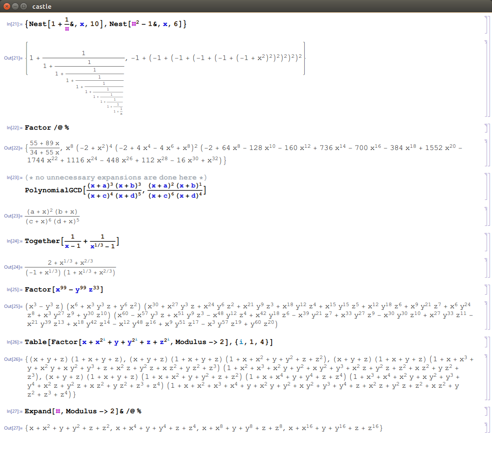
At some point it was pointed out to me that Mathematica orders a sum and a non-sum
as if the non-sum was a sum of one term. With this ordering, we seem to match
perfectly, though I decided that strings should be compared with std::strcmp.
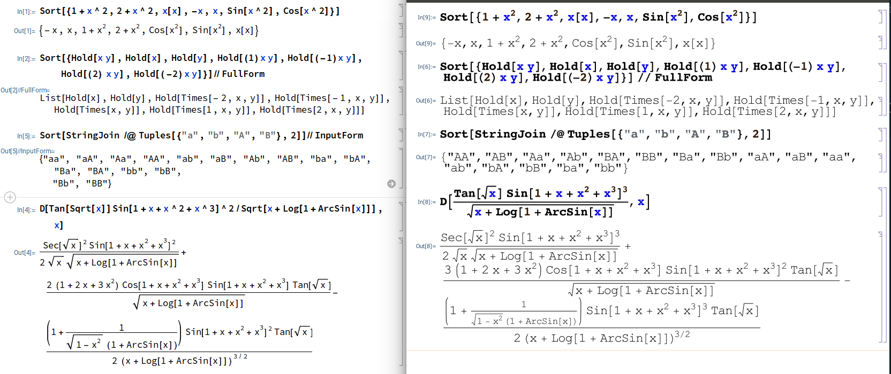
The syntax highlighting in the GUI is fully recursive as well as the rotation
boxes.
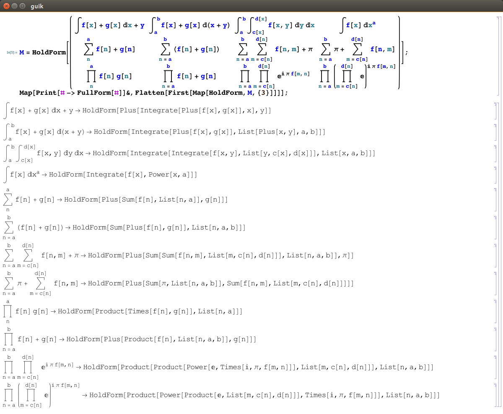
The rotation boxes can be edited in real time, and of course,
if the input is upside down, then the output is too.
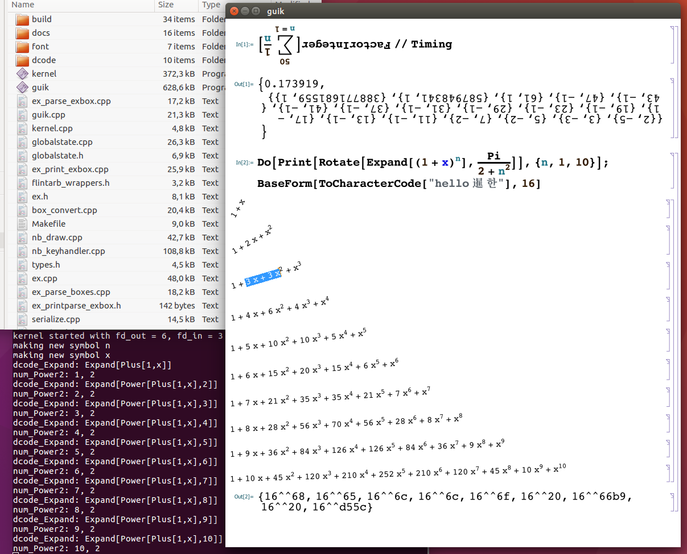
Since pattern matching is at the core of Mathematica, the pattern matcher is one
of the first things that must be right.
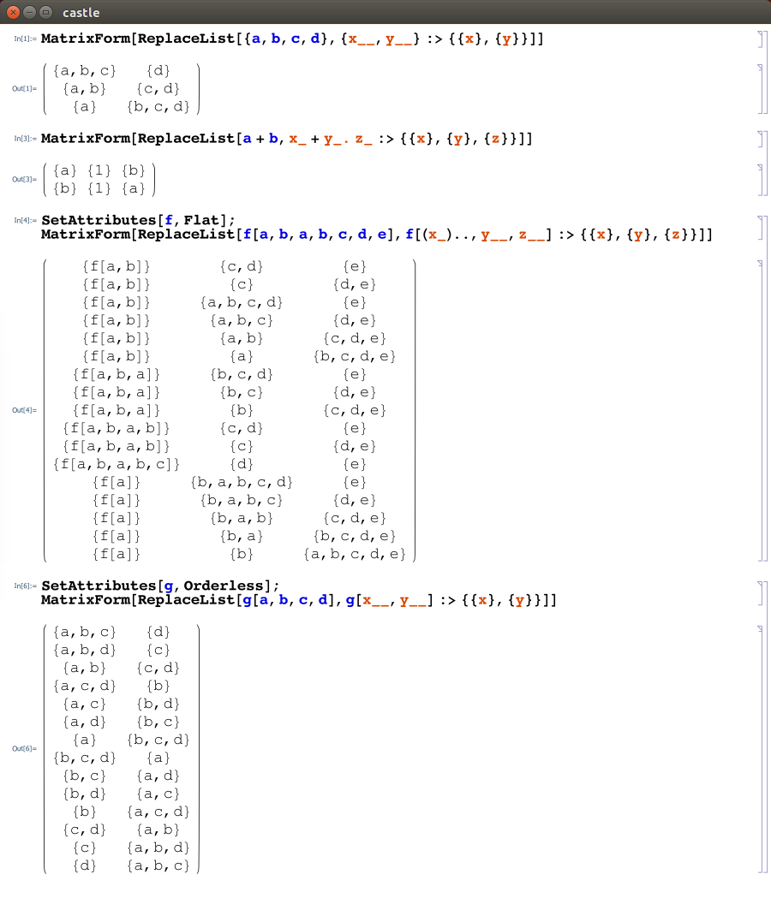
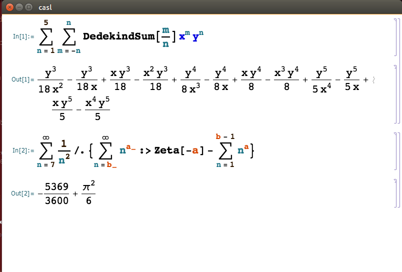
The font system is completely custom-made and independent from the OS. The only
OS-specific code is used for the piping to connect the kernel and GUI, and for
the actual display of the bitmap to the screen.
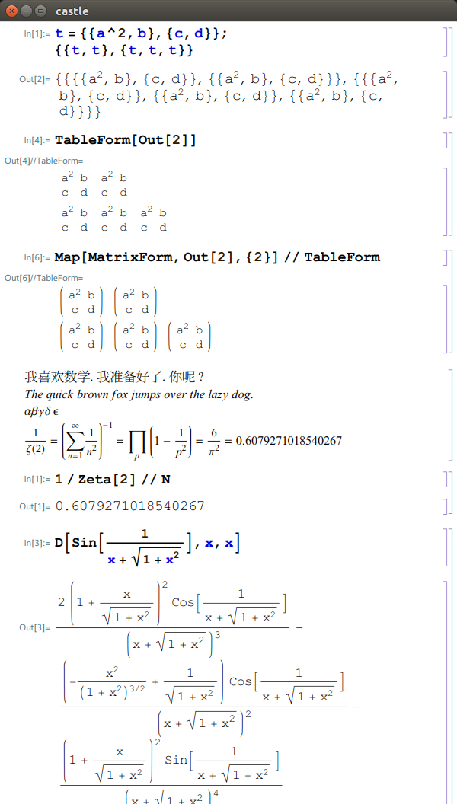
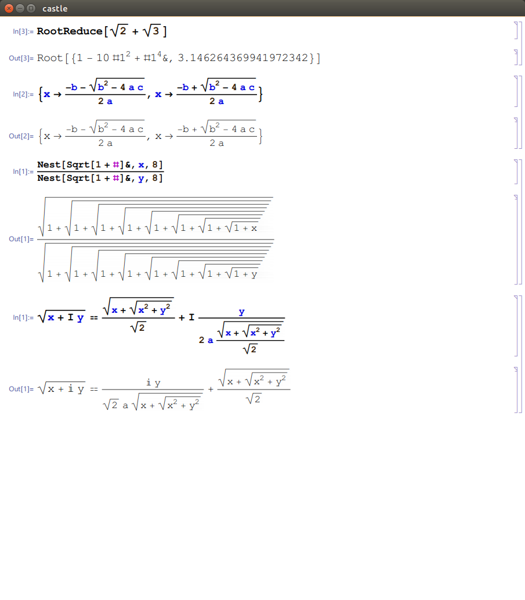
There is a very limited SSA-based optimizing compiler, though it targets only
the internal byte code, and not any real machine code.
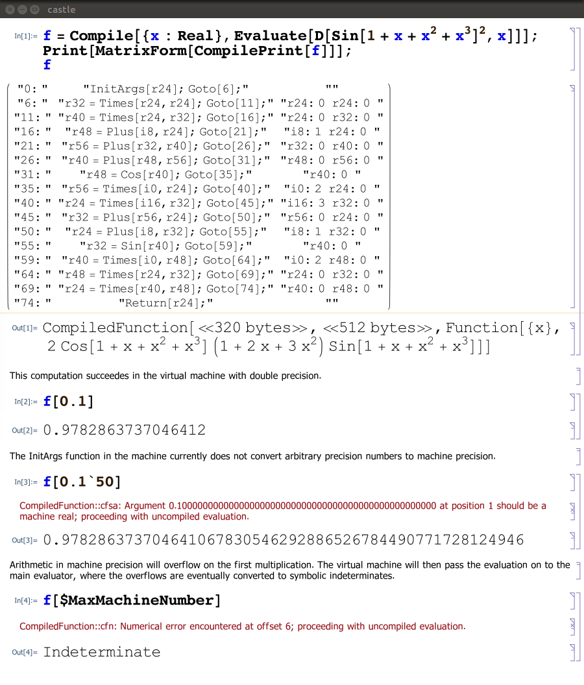
Finally, we can have ray tracing in ContourPlot3D, though this one is
slow even when the internal byte code is used for evaluation.
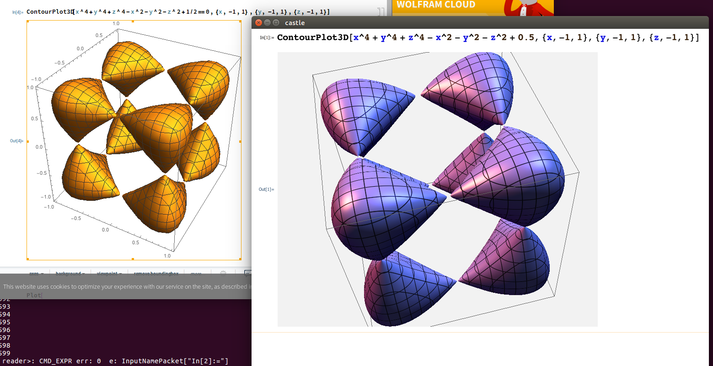